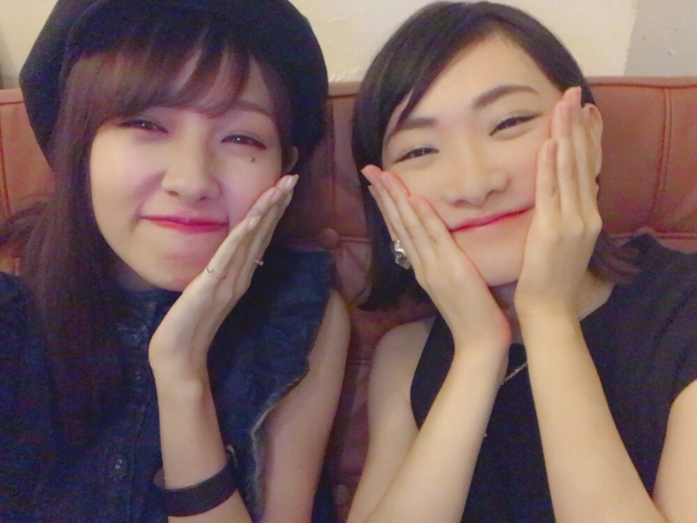
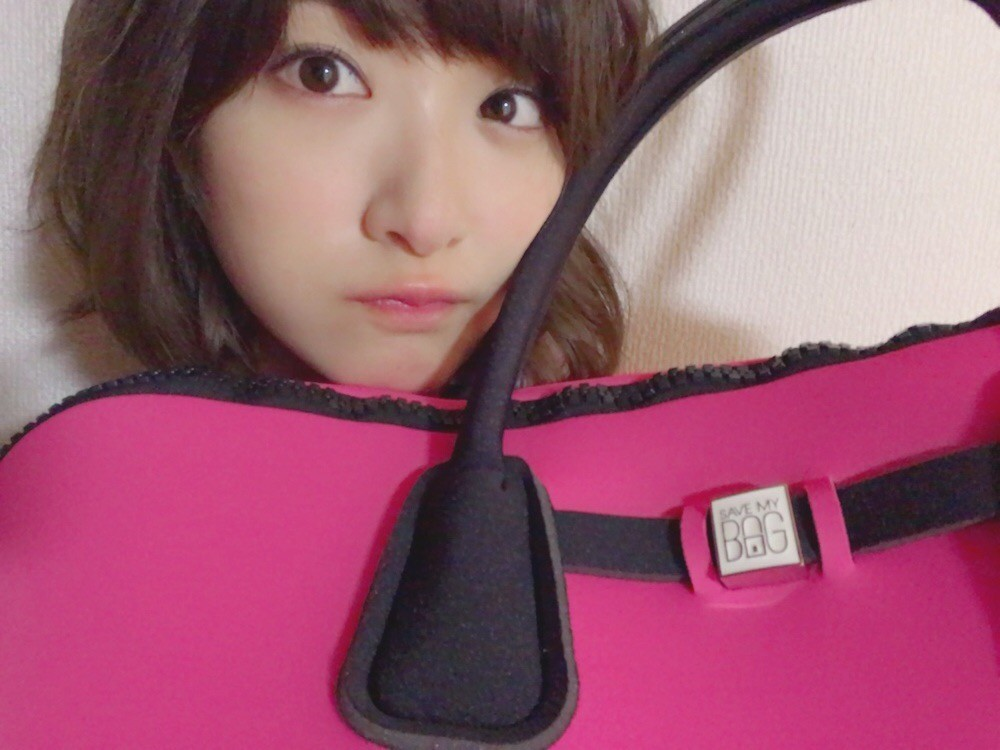
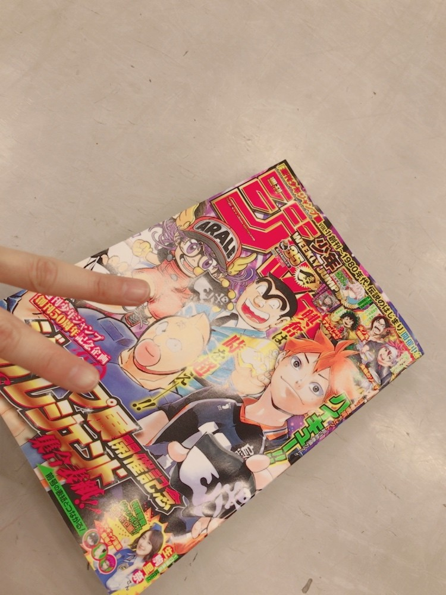

生駒です。
最近はずっとユーリに向かい合っています。
こんなにひとつの作品を集中してやるのはいつぶりだろう。
ありがたい時間を作って下さって感謝です。
最近のんちゃんに元気にしてもらいました(*´꒳`*)

のんちゃん、いこまがこの顔するとすごいうけてくれるから嬉しくていっぱいやっちゃう。

足立の梨花ねぇさんには女子力が上がるバックをオススメしてもらいました(*´꒳`*)
SAVE MY BAG 梨花ねぇさんも持ってるお揃い♡
こうして、私の女子力は上がっていくのです(*´꒳`*)☆☆

今週発売の週刊少年ジャンプはジャンポリスペシャルです！！！
ジャンプのレジェンド達と表紙にいます！！
やばいっす。
またお宝が増えました！！！
身近に尊敬できる人がいるのは救いです。
その人と話すだけでモヤモヤがなくなるんだ。
悔しさを素直に受け入れて強くなる努力ができるんだ。
今は、モマの稽古場でそれを絶賛やっています。
私は、ひとつの物事に究極まで打ち込んで、
それを莫大なエネルギーにしてみてくださる方にぶつけるのが好きです。
だから、今舞台ができる事が私にとってすごく重要な事になるんだろうなと思います。
ブログの最後に、
握手会、欠席してしまいすみませんでした。
皆さんの優しさや、期待に応えられる状態ではなかったのです。
出る事に意味があると思う、それが今のアイドルにとって大事な事だと思うから、
でも。皆さんに会うからには私がしっかり笑顔になって皆さんを迎えたい。
アイドルだけど、根っこは普通の人なんだ。
あなたに感謝を伝えたい。
でも今あなたの目の前にいる私はあなたを笑顔に出来る人じゃない。
せっかく来てくださるファンの皆さんの前では、元気で明るく会話をして、あなたに楽しかったって思ってほしい。
ごめんね。
また、次で返しますね。